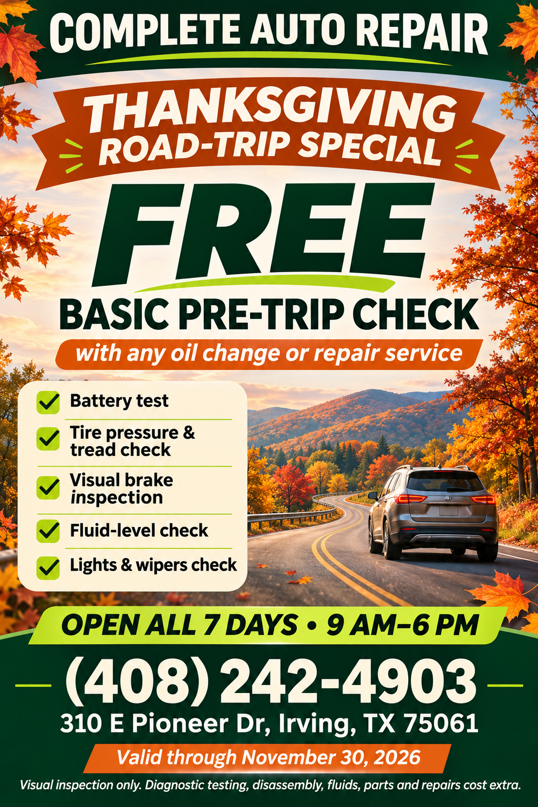
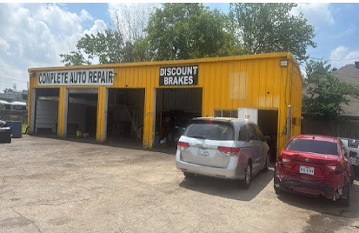

Brakes & stopping
Squealing, vibration, or a change in pedal feel? Tell us what you’re noticing.
YOUR LOCAL AUTO REPAIR SHOP
A new noise. A warning light. Your next maintenance visit. Whatever brings you here, let’s talk about your car.
⌖ 310 E Pioneer Dr · Irving, Texas
COMPLETE CARE.
EVERY MILE.
IRVING, TEXAS / READY FOR THE ROAD
NOVEMBER 2026 / LIMITED-TIME OFFER
FREE basic pre-trip check
with any oil change or repair service.
Valid through November 30, 2026.
Visual inspection only. Diagnostic testing, disassembly, fluids, parts and repairs cost extra.

01 / VEHICLE CARE
Every car has a different story. Call us to discuss your vehicle’s needs, service availability, and the next step.
Squealing, vibration, or a change in pedal feel? Tell us what you’re noticing.
A dashboard warning or an unfamiliar sound is a reason to check in.
Discuss oil changes and the maintenance recommended for your car.
Cooling, heating, or a ride that feels different? Let’s talk through it.
02 / YOUR NEXT STEP
Have your vehicle’s make, model, and any symptoms handy when you call.
Confirm availability and a convenient time to bring your vehicle to the shop.
Talk through inspection, repair options, pricing, and timing before proceeding.
03 / COME FIND US
Have a question about your vehicle? We’re a phone call away.
(408) 242-4903
310 E Pioneer Dr, Irving, TX 75061
Open in Google Maps ↗